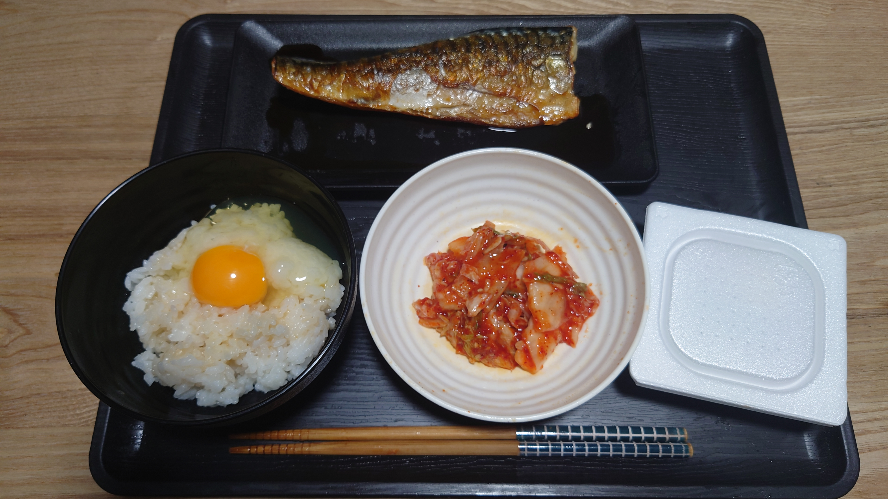
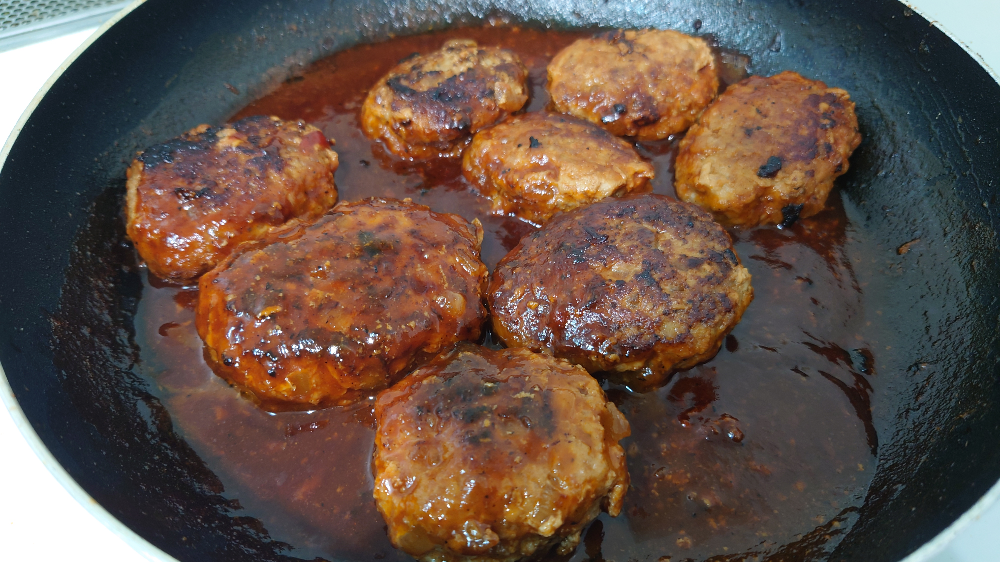
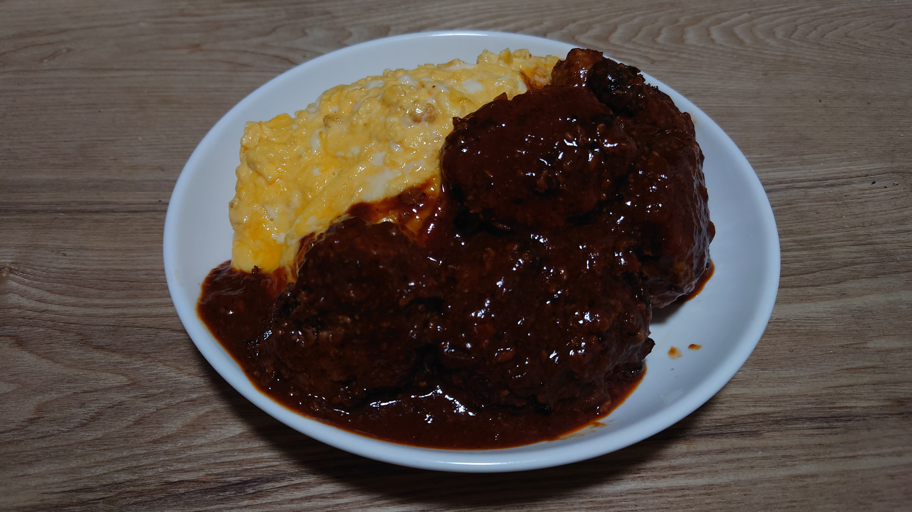

こんにちは、ザクザク食感です。
寝坊した
7時に起きなきゃいけないのに4時まで眠れなかった時点で今日の敗北は確定していたけど、今まで何度も同じ状況を乗り越えてきたのでまさか寝坊するとは思わなかった。
会社には体調不良で出席できないことにして、在宅で働いた。便利な時代で助かった……
見え見えの嘘で在宅してるのに別に怒られもしないのが逆に効いて凹んでしまった。
僕は仕事にやりがいを求めていなくていかに楽にお金を稼ぐかしか気にしないスタンスで働いているのに、こういうときに「ラッキ～！」って受け流せないところがめんどくさいなって思う。
ところで、最近僕が全然料理の写真を上げていないことにお気づきでしょうか！？
前は出勤の日にはお弁当をつくって、休日にはよくお寿司をつくっていたけど、ここ一年ぐらいやっていない気がする。
理由は単にお弁当をつくるのがめんどくさいのと、ダイエットをしていて毎日代わり映えのしないものを食べているから写真を撮っていない。
でもお金がないので自炊自体はしなければいけなくて、毎日同じものを食べている。

平日は毎日これ↑を食べている。週末は普通にお肉をたくさん焼いてお酒飲んだりするけど、だいぶ食費も抑えられるし平日に楽しみを求めない方がいいって気づいた。すごく前の日記に2カ月くらいカレー以外食べていないみたいなことを書いた気がするけど、また同じようなことをやっている。
サバがうますぎるので、全然飽きねぇ～！と思っていたけど、食の楽しみがなくなった。
食べるのが大好きというか、食べることでしかストレス発散ができないので、何も楽しくない……でもただでさえ太りやすい方なので仕方ない。
でも今日は！！！寝坊しちゃったし！！！オムハンバーグを食べます！！！！！


美味しいし料理って楽しい！！！
学生の頃よくわけわからん量のごはんをつくって食べていたので、それを思い出して楽しかった。
でも量少なめにつくったのに食べ応えがありすぎて半分しか食べられなかった。胃を縮ませたかったからいいことなんだけど、爆食する楽しみすらなくなったのかと思うと悲しかった。昔なら余裕で食べてたのに……
明日からまたサバか～と思ったら嫌になってきたのでもうやめます。でも同じものばっかり食べていたら10kgぐらい痩せられたし、他のものでなんとかしたい。
安価で美味しくてカロリーが低いごはんってありますか！？みなさんの知恵を貸してください！！！
それでは、さようなら。